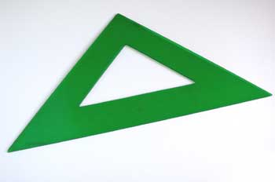

LMSGI01.- Intercambio de información en la Web.
5.- Herramientas de diseño web.

Para empezar a trabajar con documentos HTML5 + CSS3 solo necesitamos un editor de texto como Notepad++ o Sublime o Atom y un navegador. Sin embargo, existen más herramientas útiles.
Tenemos herramientas que permiten diseñar un sitio web sin necesidad de saber programar HTML. Son los editores WYSIWYG, acrónimo de What You See Is What You Get (en español, "lo que ves es lo que obtienes"). Nos permiten escribir la página sobre una vista preliminar similar a la de un procesador de textos, ocupándose en este caso el programa de generar el código fuente en HTML.
Las más populares son:
- Macromedia Dreamweaver.
- Microsoft Front Page.
- NVU/Kompozer
- Amaya
Además de las anteriores, para generar páginas web, es conveniente tener algunas de las siguientes herramientas:
Software de diseño
- Macromedia Fireworks o Adobe Illustrator para diseñar botones, logos, imágenes, etc.
- Adobe Photoshop o Gimp, para retocar fotografías y trabajar con imágenes.
Recursos: diseño web
- My Fonts, es un sitio web que nos vende fuentes que pueden ser utilizadas para la web.
- Color Voodoo, tiene interesante información sobre el uso de los colores y su influencia en la web.
- Color Picker, una paleta de colores web seguros, pues no todos los colores se ven iguales en distintos sistemas operativos.
- Adobe color, es una aplicación online de Adobe que ayuda a combinar los colores de forma armoniosa y atractiva para proyectos de diseño web.